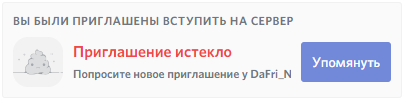
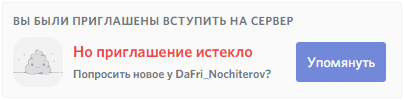

Правила и соглашения в русском переводе #
На этой странице перечислен список правил и соглашений которым следуют русские переводчики, когда выполняют перевод Discord.
Вы можете обсудить тот или иной пункт на сервере переводчиков Discord в нашем канале.
Общие соглашения #
Вы с большой буквы #
Принято решение, что «вы» всегда пишется с маленькой буквы, независимо от контекста. Только в официальных письмах используется «Вы» с большой буквах, и нет, — это не применимо к e-mail письмам от Discord.
Устаревшая информация
При обращении к одному человеку «Вы» пишется с большой буквы - это проявление уважения, а также выделение.
Это позволяет выделять цель обращения:
«Здесь вы [администрация] сможете смотреть действия происходящие на вашем сервере»
«Здесь Вы [пользователь] сможете изучить свою последнюю активность в играх»
Пожалуйста, обращайте внимание на контекст и смотрите, о ком идёт речь.
К примеру, если речь идёт о партнёрской программе, вернее, форме отправки заявки, правильнее будет писать «вы» с маленькой буквы, потому что сервер партнёра зачастую администрируется не только им самим, но и другими администраторами. Если в тексте обращаются только к одному человеку (это явно видно) — правильно писать «Вы» с большой буквы.
Источники:
Причины решения:
- Очень сложно было определять, где использовать «Вы», а где «вы»
- В некоторых местах получалась «каша» из вариантов написания с заглавной и строчной буквы
Выделение Без Необходимости #
В английском существует правило написания заголовка (да и многих другей вещей) с использованием больших букв. У нас таких правил нет и переводенный таким образом текст будет считаться неправильным.
Server Members → Участники сервера.
131 Members → 131 участник.
Ещё один пример с выделением названий функций в тексте. Тут ничего не меняется.
ПЛОХО: Загрузите приложение для рабочего стола, чтобы использовать функцию Вступления в игру.
ХОРОШО: Загрузите приложение для компьютера, чтобы использовать функцию вступления в игру.
Названия брендов, однако, могут (и, скорее всего, должны) быть выделены:
Используйте Rich Presence для привлечения аудитории.
Источники:
Бренды не переводятся #
НИКАКИХ «Дискорд», «ХайпОтряд» и т.п.
Названия функций в большинстве случаев являются брендами. Как пример — Rich Presence.
Источники: общепринято (права и лицензии).
Название компаний и брендов не переводятся, если то не зарегистрировано официально:
- Microsoft — компания в США
- Зарегистрирована (имеет представительство) в России как Майкрософт
Discord в России не зарегистрирован (не имеет представительства), поэтому «Дискорд» не является действительным названием.
Названия протоколов не переводятся #
Аббревиатурные названия протоколов не переводятся:
HTTPостаетсяHTTPData URLостаетсяData URLHypertext Markup Language→язык гипертекстовой разметки
Очень плохой пример:
Ужас! Ваша ссылка расширения протокола HTTP для поддержки шифрования в целях повышения безопасности неверна.
Уже лучше. Ваша HTTPS ссылка некорректна.
Другой пример:
Ужас! Дата УРЛ неправильна.
Плохо… Неверная ссылка с данными.
Лучше. Некорректная
Data URL.
Не «ваше», а «своё» #
В английском языке является нормой использовать «you», «your» по многу раз, однако в русском переводе избегайте большого количества «вашего», потому что, в большинстве случаев, оно «своё».
ПЛОХО: Мы отправили на ваш e-mail специальное письмо, по которому вы сможете подтвердить ваш заказ.
ЛУЧШЕ: Мы отправили на ваш e-mail специальное письмо, по которому вы сможете подтвердить свой заказ.
ПОЧТИ ИДЕАЛЬНО: Мы отправили на ваш e-mail специальное письмо, по которому можно подтвердить свой заказ.
Используйте «ёлочки», „лапки“ #
Не лапки вместо рук, нет.
В русском языке принято использовать «ёлочки» и „лапки“ в качестве кавычек.
Чтобы упростить ваши сложности, используйте WinCompose — программу, с открытым исходным кодом, для вставки разного рода символов путём нажатия клавиш в определенном порядке.
- Для русских кавычек:
- ♢ < < →
» - ♢ > > →
« - ♢ , , →
„ - ♢ ` ` →
“
- ♢ < < →
- Для английских кавычек:
- ♢ < " →
“ - ♢ > " →
” - ♢ < ' →
‘ - ♢ > ' →
’
- ♢ < " →
- В Британском английском, как в американском, но наоборот (основные это
‘и’, а дополнительные -“и”).
Дополнительно:
- ♢ . . →
…(односимвольное троеточие);- Использование данного символа в переводах пока под вопросом. Однако, его можно спокойно использовать в Discord и Twitter для сохранения доступных символов. Браузеры, такие как Chrome, не видят разницы между «…» и «...» при поиске.
- ♢ - 3 M →
⸻(«необычное» тире!);- Эта «длинная линия» отлично подойдёт для разделения сообщений в Discord, но нигде не используется в переводах (и не должна!).
Остальные комбинации можно найти в интерфейсе WinCompose.
Источники:
- British versus American style — The Punctuation Guide
- Кавычки — Википедия
- § 104. Кавычки — Артемий Лебедев
Используйте «нормальное» тире #
При переводе не используйте знак минуса в качестве тире (даже если в оригинале это так). Минус используется для диапазонов чисел (100-200) и клавиши -. Если не уверены, что вернее использовать, спросите проверяющего.
Также как и с советом выше, используйте WinCompose для его вставки:
- ♢ - - →
—(тире)
Источники:
Используйте «стрелочки» в качестве «стрелочек» #
Не используйте в переводах знак «больше» (>) как стрелочку вправо.
В Unicode давно присутствуют символы стрелочек, большинством шрифтов они поддерживаются.
Комбинации WinCompose для вставки обычных стрелочек:
- ♢ → → →
→ - ♢ ← ← →
← - ♢ ↑ ↑ →
↑ - ♢ ↓ ↓ →
↓
«Натуральное (естественное) звучание» текста #
Текст должен звучать «натурально» на нашем языке. Используйте абсолютно все возможности, чтобы сделать его таковым.
- «Перефразирование»
- «Адаптация»
- другое…
Но самое главное — не потеряйте исходный смысл предложения и не создайте новый.
Источники:
Текст должен «влезать» #
Хороший перевод должен быть адаптирован под существующие лимиты пространства. Знать лимиты пространства можно только зная контекст строки.
Пример ошибки:

И её допустимое исправление:

{username}?».
Смысл не потерян, он всё так же о том, чтобы попросить новое приглашениеИщите все возможные пути, чтобы обойти ограничения. Подходите к ним креативно.
Источники:
ПОДТВЕРЖДЕННЫЕ ОПРЕДЕЛЕНИЯ #
Эти определения подтверждены языковым(и) проверяющим(и).
Важно знать!
- Не пытайтесь изменить определения без согласия языкового проверяющего и не советуйте другим переводить иначе;
- Перевод с «языковой адаптацией» должен либо полностью исключать отсылки к этим определениям, либо использовать их.
Когда следует обращаться к языковому проверяющему #
- В случае расхождений. Не советуйте другим изменить перевод определения, выполненный с использованием этого списка.
- Безосновательные требования. В случае, если кто-то требует от Вас изменить / удалить перевод выполненный на основе этих определений по причине того, что «ваш перевод неверный», отправьте ему ссылку на этот документ и обратитесь к проверяющему;
- Ошибка в определениях? Если одно из определений в списке вас не устраивает или содержит ошибку.
| Определение | Контекст ↓ | Переводить как | но не! | Пример |
|---|---|---|---|---|
| Nickname | Роли и участники | Никнейм | Имя пользователя | Сменил никнейм |
| Permission | Роли и участники | Право | Разрешение | Это право позволит… |
| Overwrite | Роли и участники | Переопределение | Перезапись | Переопределение прав |
| Webhook | Функции сервера | Вебхук | Webhook | Создал вебхук |
| Audit Log | Функции сервера | Журнал аудита | Журнал событий, лог | Изучите журнал аудита |
| Emoji | Эмодзи | Эмодзи | Emoji, эмоции, смайлы | Пользовательские эмодзи |
| Alias | Эмодзи | Название | Алиас, имя | Эмодзи с названием «Kappa» |
| Create | Журнал аудита | Создал | Добавил (искл. для эмодзи) | Создал канал |
| Overwrite | Настройки | Переопределение | Перезапись, перенастройка | Переопределение настроек |
| Merch | Маркетинг | Атрибутика | Вещи, мерчендайз, мерч | Магазин атрибутики |
| Sweet | Игровой лут | Приятный | Вкусный | Приятным выпавшим лутом |
| Permission | Доступ к функциям | Разрешение | Право | Разрешение на доступ к ф… |